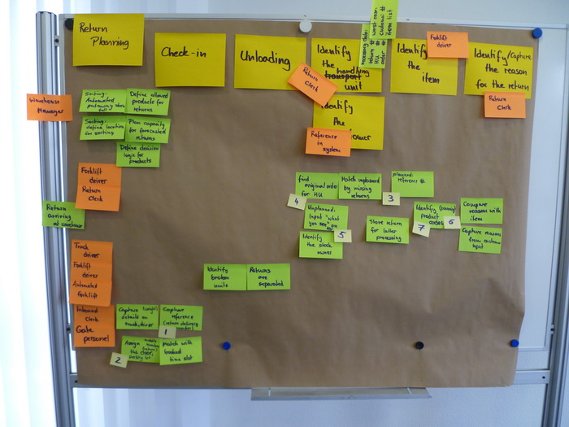
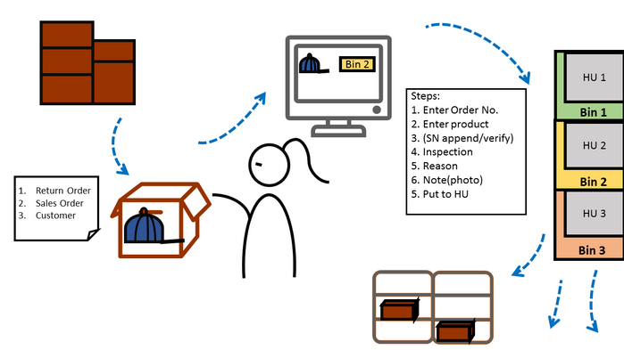
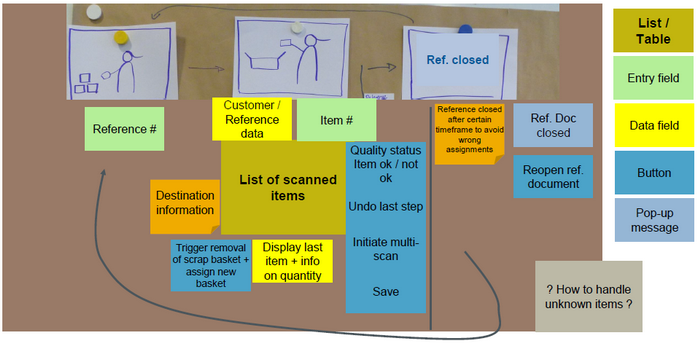
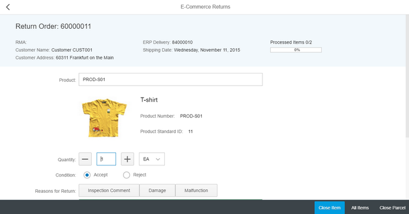

empathize
Get to Know Our User
<<<<<<< HEADWe started with a one-day workshop with stakeholders, including product owners, customer representatives, warehouse management. We invited EWM customers who demand for software assistantship in e-commerce return business. Customers are from various areas including groceries, coffee and cloth industry. The workshop helped us collect information of return process in their business, and their special concerns in each particular industry, so we could better understand their pains.

=======
We started with a one-day workshop with stakeholders, including product owners, customer representatives . We invited EWM customers who demand for software assistantship in e-commerce return business. Customers are from various areas including groceries, coffee and cloth industry. The workshop helped us collect information of return process in their business, and their special concerns in each particular industry, so we could better understand their pains.
This picture is credited by Hanna
>>>>>>> origin/master
Define
Co-innovation with Reference Customer
<<<<<<< HEAD
Later, we clustered our findings to affinity diagram by process, aiming to derive important elements in most e-commerce return business, then defined the process space:
=======
Later, we clustered our findings to affinity diagram, aiming to derive important elements in most e-commerce return business, then concluded several common and important ideas, defining the process space:
>>>>>>> origin/master
<<<<<<< HEAD
Considering facts of business organizations and software itself, we prioritized requirements, and decided to work with one persona first. We build a persona "Roberta" for return clerk working in sports retailing company. I also developed storyboard for idea presentation with design central team and developers.

=======
Considering facts of business and software itself, we prioritized requirements, and decided to work with one persona first. We build a persona "Roberta" for return clerk working in sports retailing company. I also developed storyboard for idea presentation with design central team and developers.
>>>>>>> origin/master
For e-commerce return application in EWM, we set us two most important goals:
<<<<<<< HEAD
1. From user experience perspective, we ought to provide helpful and neat guide in proper timing, to assist warehouse clerk process returned product correctly and efficiently.
2. Program on existing system to initiate return process from EWM, recording all the useful information of inspection process to return order creation. At the mean time, the commitment time shall be rigidly short.
=======
2. Program on existing system to initiate return process from EWM, recording all the useful information of inspection process to return order creation. At the mean time, the commitment time shall be rigidly short.
1. From user experience perspective. We ought to provide helpful and neat guide in proper timing, to assist warehouse clerk process returned product correctly and efficiently.
2. Program on existing system to initiate return process from EWM, recording all the useful information of inspection process to return order creation. At the mean time, the commitment time shall be rigidly short.
>>>>>>> origin/master
2. Program on existing system to initiate return process from EWM, recording all the useful information of inspection process to return order creation. At the mean time, the commitment time shall be rigidly short.
Ideation
Lead Smooth Inspection & Trigger Return Process in EWM
<<<<<<< HEAD
We had remote and face-to-face interview over 10 times with target user, asking open-ended questions and contextual inquiries for quantative data, like their general workflow. We had field observation in warehouse and directed storytelling to collect qualitative data, such as how they make mistakes. Our questions and observations aimed to clear following uncertainty:
1. How warehouse clerk process returned items in your business? Any difference in this process between warehouses in different areas? ("Could you walk us through the return process?")
2. How do you record unplanned return products in system currently? What else is wanted to improve your business process? ("What would you when you have returned goods without record in system?")
3. In which step does error or slip happen? ("What mistake did you make last month/week?")
4. Any other system is related to return process? Did you develop your program? ("What other tool do you use?")
2. How do you record unplanned return products in system currently? What else is wanted to improve your business process? ("What would you when you have returned goods without record in system?")
3. In which step does error or slip happen? ("What mistake did you make last month/week?")
4. Any other system is related to return process? Did you develop your program? ("What other tool do you use?")
To avoid bias assumption, we asked every team member to take notes of what they heard and what they observed. (Since individual member has his specialized domain of SAP system, it was proofed to be an effective technique to help us understand the situation thoroughly.) After sorted out the huge amount of notes token by the team, we synthesized core elements in work flow:

=======
We had remote and face-to-face interview over 10 times with target user, asking open-ended questions and contextual inquiries for quantitive data, like their general workflow. We had field observation in warehouse and directed storytelling to collect qualitative data, such as how they make mistakes. Our questions and observations mostly trying to figure out following questions:
1. How warehouse clerk process returned items in your business? Any difference in this process between warehouses in different areas? Could you walk us through the return process?
2. How do you record unplanned return products in system currently? What else is wanted to improve your business process?
3. In which step does error or slip happen?
4. Any other system is related to return process? Did you develop your program?
2. How do you record unplanned return products in system currently? What else is wanted to improve your business process?
3. In which step does error or slip happen?
4. Any other system is related to return process? Did you develop your program?
After sorting out the big-volume notes token by the team, we defined core work flow of our application:
>>>>>>> origin/master
Prototyping
Validate our Solution
For UI harmonization, we decided to use Fiori framework for return application. Compared to my other more flexible prototyping experience, I had challenging time designing within constraints of Fiori design guideline.
Fiori has great role-based floorpan to supporting transaction of monitoring and pipeline business. But in this return app, we hope to link return clerk’s physical activities with the system interaction, to build intuitive conceptual model. We had two major problems:
1. How to sequence and prioritize all the actions in a singe page, so that the user could finish task without bother to scroll? How to arrange secondary information? It would be too much if all pop-ups
2. Return clerk wants to execute put-away in system when HU (handling unit) is full of returned product, and sometimes needs to create a new HU. How to reflect two actions in the system, and avoid interruption/confusion?
2. Return clerk wants to execute put-away in system when HU (handling unit) is full of returned product, and sometimes needs to create a new HU. How to reflect two actions in the system, and avoid interruption/confusion?
We re-examined user scenarios, and categorized user input into necessary, occasionally necessary and nice-to-have. We surely gave first priority to the necessary input, and put nice-to-have features in lower positions. For occasional data, take serial number as an example. Users mainly capture it on a pop-up window, and able to check or modify it later by clicking tagged abbreviated information on main page. We also designed a group of toggle buttons for condition selection, to restrain user from making mistakes.(This was proved to be effective in A/B test) And the content of those buttons are customizable to provide more flexibility for different business. Final version of Axure prototype after four times iteration cannot be posted due to non-disclosure agreement.

Test
Warehouse Staff Wants our Application
We had our prototype send to usability test, letting real warehouse clerk play with the prototype. Two of our developer colleagues were able to be on customer site. With the pictures of working scene in warehouse, they dictated how Roberta used our software and what she said. I only list several important gists derived from notes token by the whole team.
1. They almost merely care about the destination and press “put-away” button repetitively for each item.
2. They had to switch between scanner and mouse
3. Operating on the screen may distract them from inspecting
4. They couldn't see well which HU is full
2. They had to switch between scanner and mouse
3. Operating on the screen may distract them from inspecting
4. They couldn't see well which HU is full
Accordingly, we calibrated our prototype.
1. We made the field of destination location much larger with color sign indicating the quality condition and next destination. And we made it clickable to execute put-away.
2. We enabled the possibility to run through whole process by scanner without mouse and keyboard. For example, customer could configure a specific code representing put-away, and when user scan it, system would execute put-away. In this way, user could also be more focused on inspection process
2. We enabled the possibility to run through whole process by scanner without mouse and keyboard. For example, customer could configure a specific code representing put-away, and when user scan it, system would execute put-away. In this way, user could also be more focused on inspection process
Outlook
The Future of E-commerce Return
In this project, I worked as user experience advocator first time with a team of developer and software architects. I was lucky to get this chance to practice design-driven software development, and test my design idea with real customers. At meantime, I enjoyed very much propelling my whole development team to think for users, and used information visualization to promote team communication. It made me motivated when I know my work is producing value for users outside in warehouse and I could use their feedback to improve my work constantly. However, mission is not done yet, we still need to see how extendable our product is, and how this tool would meet market trend in a larger scale.
Reflection
What we could do better
There are still things I am skeptical about. For example, the understanding phase is based on communication with warehouse manager, without involving the first stakeholder who directly uses our APP— warehouse return clerk. Would there be better and more efficiency design iteration, if we involve them in the beginning before we have built our mind? How we organize a gathering of warehouse clerks from different area? What should be prepare?
The most undesired consequence is that the end user only found bad usability issue after the product is released to market, even though the product has passed the usability test in a given context — lab. Because of the company cooperation myths, we hardly have access to observe end user in requirement gathering phrase. It also happens in another project I am working on recently. Before I could convince the leadership invest more in customer relations, I am also thinking actively with what was given, how to refine our design process to focus on the as best task as we can in each phrase.
The most undesired consequence is that the end user only found bad usability issue after the product is released to market, even though the product has passed the usability test in a given context — lab. Because of the company cooperation myths, we hardly have access to observe end user in requirement gathering phrase. It also happens in another project I am working on recently. Before I could convince the leadership invest more in customer relations, I am also thinking actively with what was given, how to refine our design process to focus on the as best task as we can in each phrase.